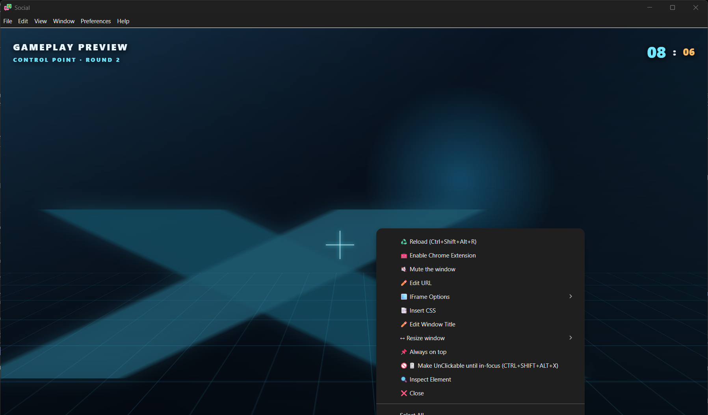
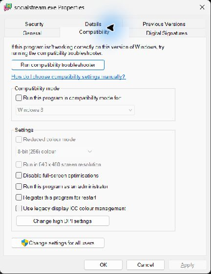

Start with the symptom
If chat is visible on the desktop but disappears over a game, start with the overlay controls, then the game's fullscreen settings. If forcing the overlay on top causes flashing or repeated window switching, turn Force on top off first.
This guide covers the Social Stream Ninja desktop app (SSApp) on Windows 10 and 11. The display checks also help with Electron Capture and other desktop overlays, although their controls differ. For first-time setup, use On-screen chat while gaming.
| What happens? | What to check | Start here |
|---|---|---|
| Works over other apps; disappears in the game or at its main menu | Fullscreen presentation or competing topmost windows | Fullscreen |
| Stopped after F11, Alt+Enter, Alt+Tab, or using another monitor | Changed display mode, pin state, or window position | Restore, then fullscreen |
| Game minimizes, windows alternate, or clicks leave the game | Force on top, click-through, or another overlay | Focus and conflicts |
| Black/white rectangle, flicker, stutter, or a frozen PC | Transparency, graphics settings, or driver trouble | Graphics |
| Empty even on the desktop, or wrong only in OBS | Chat content, session, or capture method | Chat and capture |
Change one thing at a time. Note the original setting, restart the affected app/game when required, and repeat the action that caused the problem. Undo changes that do not help. Stop testing a display mode if it repeatedly locks up your PC.
1. Restore and re-pin the overlay
- Pause the game and use Alt+Tab to select the chat overlay. Confirm that it is open and showing content over an ordinary desktop window.
- Right-click the overlay itself. Turn Always on top off and back on. Pinning the main SSApp window does not pin a separate chat window.
- If it still falls behind other windows, try Force on top on that overlay. This separate Windows option is already available in SSApp 0.4.40. It periodically raises the window; it does not bypass exclusive fullscreen. Turn it off if it causes flicker, minimizing, or switching.
- When the position is correct, select Make UnClickable until in-focus so mouse clicks pass to the game. Return focus to the game using Alt+Tab.
- If the window still behaves incorrectly, close and reopen just the overlay from the Social Stream settings panel, then reapply pinning and click-through. If needed, exit and reopen SSApp. Reinstalling and deleting app data is not a first step for a problem confined to one game.


Cannot click or find the overlay?
Try Alt+Tab to focus it, then Ctrl+Shift+Alt+X to recover interaction. In SSApp this shortcut can first unpin windows and affects multiple app windows; it is not only a toggle for the focused overlay. Check pinning and click-through again afterward. Avoid repeatedly pressing it while playing.
After a monitor disconnect or resolution change, select the overlay with Alt+Tab and try Windows+Shift+Left/Right Arrow to move it between displays. If it cannot be recovered, reopen it on the intended monitor. Place it fully inside one display while diagnosing the problem.
2. Check how the game uses fullscreen
SSApp chat is a desktop window. A game using exclusive fullscreen can own the display in a way that prevents ordinary desktop windows from being drawn over it. More aggressive pinning cannot guarantee an overlay in that mode.
Borderless fullscreen fills the screen without a title bar or borders, while allowing desktop overlays. It is an option when stable on your PC, not a requirement to keep trying if it freezes your game.
A game's “Fullscreen” label does not reveal the whole picture: Windows can apply Fullscreen Optimizations behind that setting. This can explain why an overlay works with fullscreen in one situation and fails in another. It does not prove that F11 changed a Windows setting. Microsoft explains fullscreen modes and overlays.
If you need to keep the game's Fullscreen setting
- Use the game's video menu to select and apply Fullscreen. Exit normally and relaunch. Check that the mode, resolution, and monitor selection were saved. Keyboard shortcuts such as F11 and Alt+Enter are game-specific.
- Find the running game's executable, not just its launcher: in Task Manager's Details tab, right-click the game process and choose Open file location. Then close the game.
- Right-click that executable, choose Properties → Compatibility, and note the state of Disable fullscreen optimizations. For an overlay hidden in fullscreen, try leaving this box unchecked, apply, and relaunch. Unchecked means the optimization is allowed. If it is already unchecked, this step adds no change.
- If the problem is instead black screens or freezing during Alt+Tab, follow the game's support guidance and compare both checkbox states, restarting between attempts. Restore the original if the change makes no improvement.
These settings are not interchangeable:
- Fullscreen Optimizations: the executable's Compatibility checkbox above.
- Optimizations for windowed games: a separate Windows 11 graphics option for compatible DirectX 10/11 games in windowed or borderless modes. See the graphics checks below.
Intel recommends allowing fullscreen optimizations for its documented Alt+Tab black-screen symptom. Riot recommends disabling them for some VALORANT Alt+Tab problems. Use the result for your game; neither setting is universally better.


If only exclusive fullscreen is stable and the desktop overlay still cannot appear, keep the stable game mode. Use chat on a second display or another device, or a game-supported overlay that explicitly supports that mode. A working Steam or Discord overlay does not establish that a separate SSApp desktop window can use the same display path.
3. Stop window switching and mouse conflicts
- Disable Force on top if windows alternate. Use ordinary Always on top. Confirm the game stays focused before trying another setting.
- Enable click-through after positioning. A transparent window can still intercept input. If clicking the chat area minimizes the game, return focus to the game and recheck Make UnClickable. Transparency, pinning, and click-through are separate controls.
- Test without other optional overlays. Temporarily disable Steam/Discord overlays, GPU recording or performance overlays, and RTSS/MSI Afterburner on-screen displays one at a time. Restart the game between tests. Re-enable anything that makes no difference. Keep SSApp as the only overlay for a comparison if necessary.
- Check privileges only for an input or hotkey problem. Prefer running both the game and SSApp normally. If the game requires administrator access, a one-time matching-privilege test may help diagnose blocked interaction; use the administrator-mode guide and return to normal afterward unless the test establishes a need.
Electron documents that a click-through window can still receive keyboard input while focused. It also documents a specific limitation for mouse-move forwarding over an elevated app. That does not mean all click-through requires administrator access, or that elevation can make a hidden overlay bypass exclusive fullscreen. Electron input behavior.
If the issue begins only when OBS opens, check OBS's game-capture conflicts. Its fixes concern capture hooks; they are not proof of a fault in SSApp's pinning.
4. Fix black backgrounds, flickering, and freezing
If only the overlay turns black, white, or blank
- Close Inspect Element / Developer Tools if open. Return the overlay itself to a normal, unmaximized window; do not put the overlay into fullscreen to make it cover the game.
- Close and reopen the overlay, initially at a smaller size. Check it on the desktop before opening the game. If resizing or moving it to another monitor triggers the fault, note that exact action.
- Check desktop app updates. An SSApp update includes its browser runtime; updating Chrome separately does not update SSApp. Keep your session/settings and avoid an app-data reset as a routine upgrade step.
- If the Dock still receives messages but one overlay stops painting after being hidden, reopen that overlay. Report whether it followed minimizing, screen sleep, or several minutes in the background.
Electron documents transparency limitations involving Developer Tools, resizing, and maximizing. These are different from a game covering a healthy overlay. Transparent-window limitations.
If the game or whole screen flickers, stutters, or locks up
First compare the game with SSApp completely closed. If it still fails, troubleshoot the game/driver independently. If the failure requires SSApp, repeat with Force on top off and other optional overlays disabled. Save work before attempting a combination that previously locked up the PC; do not keep reproducing hard freezes.
- Drivers and recent changes: record the GPU model and driver version. Use your GPU or laptop manufacturer's supported driver. If the fault began immediately after an update, check its release notes and the manufacturer's rollback procedure instead of changing several graphics options at once.
- Display mode: compare the game's resolution and refresh rate with the desktop. If supported, try matching them for a test. A brief black transition when changing modes is different from a persistent black screen or frozen machine.
- DirectX mode: if the game provides a supported DX11/DX12 selector, test the other mode and restart, noting which visual features change. This is game-specific: OBS, for example, recommends DX11 for some Fortnite DX12 capture crashes. Do not copy launch flags from a different game.
Windows 11: per-game graphics checks
Open Settings → System → Display → Graphics, select the game and open its options (labels vary by Windows version). Note the existing values, change one setting, save, and restart the game.
- If a compatible DX10/11 game fails in borderless/windowed mode, compare Optimizations for windowed games on and off for that game.
- If enabled, test without Auto HDR for that game. It can automatically enable windowed optimizations.
- On a PC with integrated and dedicated GPUs, check the selected GPU. For cross-GPU rendering problems, compare the game and SSApp on the same GPU using their individual graphics preferences. This is a diagnostic, not a fullscreen bypass. Restore the original preference if there is no benefit.
Microsoft's per-app graphics instructions. This windowed optimization setting is not a general DX12 fix.
Further checks for persistent graphics problems
G-SYNC / variable refresh: if flicker or stutter appears when another window overlaps the game, compare the current G-SYNC mode with fullscreen-only. NVIDIA specifically offers that option for trouble with windowed applications. Record and restore the original setting if it does not help; it affects other apps too. NVIDIA's G-SYNC settings.
SSApp hardware acceleration: for a black/flickering overlay, support may ask for one launch with --no-hwa appended after the quoted executable path in a Windows shortcut's Target. Exit SSApp fully before that launch. This affects the whole app and may reduce video performance or alter transparency; remove the flag and restart to undo. It cannot fix exclusive fullscreen blocking another window.
Multi-Plane Overlay (MPO): this is a Windows/GPU composition feature, not the chat overlay. NVIDIA provides disable and restore procedures. Reserve that system-wide registry change for a matching graphics problem after the per-app checks, preferably with vendor support. Keep the restoration instructions and restore it if it makes no improvement. Do not combine it with unrelated registry “gaming fixes.”
5. Separate missing chat from missing windows
If the overlay is empty on the desktop too, check the Social Stream Dock and the overlay's session ID. Featured Chat only displays a message selected from the Dock. Use the test-message guide to check content, and session and connection troubleshooting if messages never arrive. Pinning cannot repair an empty feed.
For a solid page background, enable Force transparent background in that view's settings and reopen its generated URL inside SSApp. See background transparency.
Visible on your monitor but absent from OBS? A private desktop overlay and a broadcast overlay are separate outputs. Add the generated chat URL as an OBS Browser Source if viewers should see it. If they should not, use an appropriate game/window capture and verify a local recording; Display Capture includes visible desktop chat.
A fullscreen game may stop rendering when you Alt+Tab to inspect OBS. Check a recording made while the game was focused before diagnosing capture failure. OBS fullscreen guidance. For a blank OBS Browser Source, use OBS troubleshooting.
MechWarrior 5: Mercenaries after F11
F11 toggles the game's display mode. If the overlay worked before the toggle, start by reapplying Fullscreen in the game's video menu and restarting the game normally. Keep Force on top off if it makes windows alternate. If borderless locks up your machine, use the fullscreen compatibility check and graphics checks instead of repeatedly trying that mode.
Check the saved fullscreen settings without resetting the game
- Close MW5. In File Explorer, paste
%LOCALAPPDATA%\MW5Mercs\Saved\Config\WindowsNoEditorinto the address bar. If your installation uses a different subfolder under Config, locate its existingGameUserSettings.ini; do not create another copy there. - Copy the file to a backup location outside that folder, then open the original in Notepad to read it.
- Record
FullscreenMode,LastConfirmedFullscreenMode, andPreferredFullscreenMode, along with the resolution. Close Notepad without saving changes. - Apply your intended mode in the game, exit normally, and read the file again. If settings do not persist, check for a read-only file, launcher options, cloud synchronization, or a mod restoring settings before editing values manually.
Unreal's standard FullscreenMode values are 0 for fullscreen, 1 for windowed fullscreen, and 2 for windowed. The preferred setting controls fullscreen toggling. Different stored values are not by themselves corruption, and a stored 0 does not prove that Windows is currently presenting in exclusive mode. Unreal settings reference; MW5 example configuration.
If game support recommends resetting this file, keep the backup: it also contains preferences and controls. Do not delete the whole Saved directory, which can contain campaign saves. PGI has documented a configuration reset for a specific key-binding problem; that is not a documented fix for fullscreen chat overlays.
When asking for help, specify Mercenaries, the launcher/store, GPU and driver, DX11/DX12 mode if known, mods, and whether the failure starts at the main menu or inside a mission. MechWarrior 5: Clans is a different game; do not apply its configuration paths or fixes automatically.
Related issues and which fix they point to
Use these reports to match a symptom and platform. An old Electron report is not a diagnosis for a current SSApp installation, and an OBS capture fix does not necessarily fix desktop overlay visibility.
Fullscreen, focus, and input reports
| Issue / evidence | Cause or limitation | Useful action |
|---|---|---|
| CrossOver fullscreen support — Electron overlay project | Desktop pinning did not make its window visible over exclusive games; native/in-game overlays use different mechanisms. | Check the game's display mode; use another display if exclusive fullscreen is necessary. |
| Discord's 2024 overlay change — vendor notice | That revamped overlay supported windowed fullscreen, not true fullscreen. Overlay implementations have different requirements. | Check the particular overlay's supported modes; another app working does not prove SSApp can use its method. |
| Electron #24096 — Windows 10, Electron 7–9 | Reported loss of topmost ordering after interaction on a second display. | Re-pin/reopen; compare on one display and report the monitor-switch sequence. |
| Electron #25915 — show/focus report | Showing a window with Start open could leave it behind other windows with incorrect focus events. | Close Start and select the overlay explicitly; distinguish focus from visibility. |
| Electron #35414 and #35030 — Electron 18–20 / 19 reports | Mouse forwarding was associated with cursor or dragged-window flicker in particular app configurations. | Compare click-through on/off, then update/report. These reports do not establish the cause of SSApp Force on top switching. |
| Electron #33281 and current API documentation | Mouse-move forwarding can stop over an elevated foreground app even while clicks still pass through. | Check privilege mismatch for input failures; do not prescribe administrator mode for every invisible overlay. |
| Electron #10078 and #37865 — macOS fullscreen reports | macOS fullscreen Spaces/workspace behavior differs from Windows. | On macOS, compare a normal maximized game window and update the wrapper. Windows Compatibility settings do not apply. |
Rendering, game, and capture reports
| Issue / evidence | Cause or limitation | Useful action |
|---|---|---|
| Electron #27286 — Electron 11.0.4 | Transparent fullscreen overlay windows became opaque; this is about the overlay's own fullscreen state. | Keep the overlay unmaximized, reopen, and update the app. Do not infer the game must be windowed from this report. |
| Electron #48554 — 39 beta report | Transparent-window resizing regressed between beta builds. | Report the app version and resize trigger; avoid repeated resizing while using a working size. |
| Electron #42378 — hidden-window rendering | A reported frame-eviction problem left some windows blank after minutes hidden. Maintainers later linked a fix and requested retesting on newer versions. | Reopen/update; report hidden time and restore behavior. Do not assume chat capture stopped just because painting stopped. |
| MW5 HOTAS Studio's known quirks — tool author's report | F11 is a fullscreen toggle, so controller bindings using it can change display mode. | Check saved mode and bindings; this is not evidence that F11 modifies the Windows Compatibility checkbox. |
| Steam-overlay crash reports, including MW5 — player reports | Players described freezes/black screens after opening Steam's overlay; the report does not establish the cause of SSApp visibility problems. | Test without Steam's overlay if installed, and collect GPU/driver details for freezes. |
| VALORANT Alt+Tab guidance versus Intel black-screen guidance | The vendors recommend opposite fullscreen-optimization states for their respective problems. | Compare per-game compatibility settings, keeping the stable result. |
| OBS: Fortnite, Destiny 2, CS2, and other games | DX12 capture issues, game-specific capture restrictions, and conflicts with overlay hooks. | Use OBS's named-game instructions when the recording fails. Keep that diagnosis separate from a missing desktop chat window. |
Still stuck? Send a useful report
Use Social Stream support for an overlay problem. For a game that freezes even with SSApp closed, start with the game or GPU manufacturer's support.
- Game name, launcher/store, mods, and the exact action that breaks it.
- Windows version/build, GPU and driver version, monitor count, resolution/refresh rate, and HDR/variable-refresh settings.
- SSApp version, whether Always on top or Force on top is enabled, and whether click-through is enabled.
- Whether it works on the desktop, in the game's menu, and during gameplay; include the selected display and DirectX mode.
- Which individual changes helped, did nothing, or made it worse. Mention if a full Windows restart was already tried.
- A short video or screenshots of the symptom and game display settings. Hide session URLs, account details, and private chat.
If a desktop screenshot misses the flicker or black screen you can see, a phone video can document the physical display. Keep the working game configuration until a narrower fix is available.